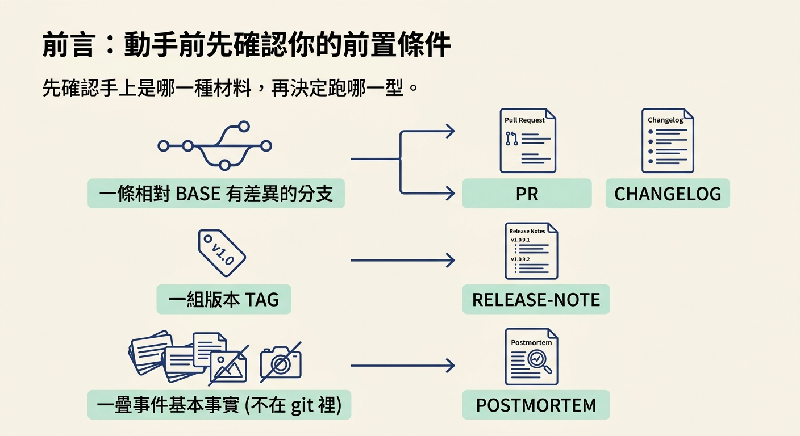
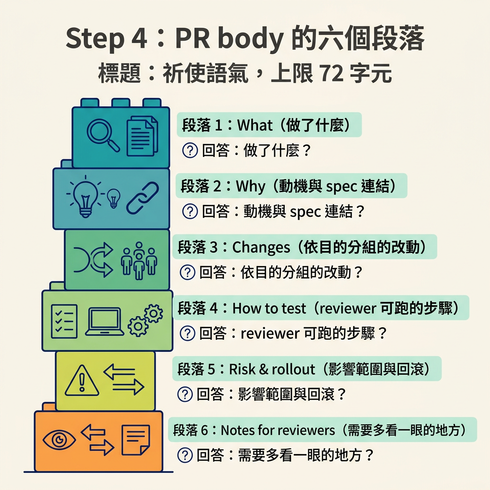
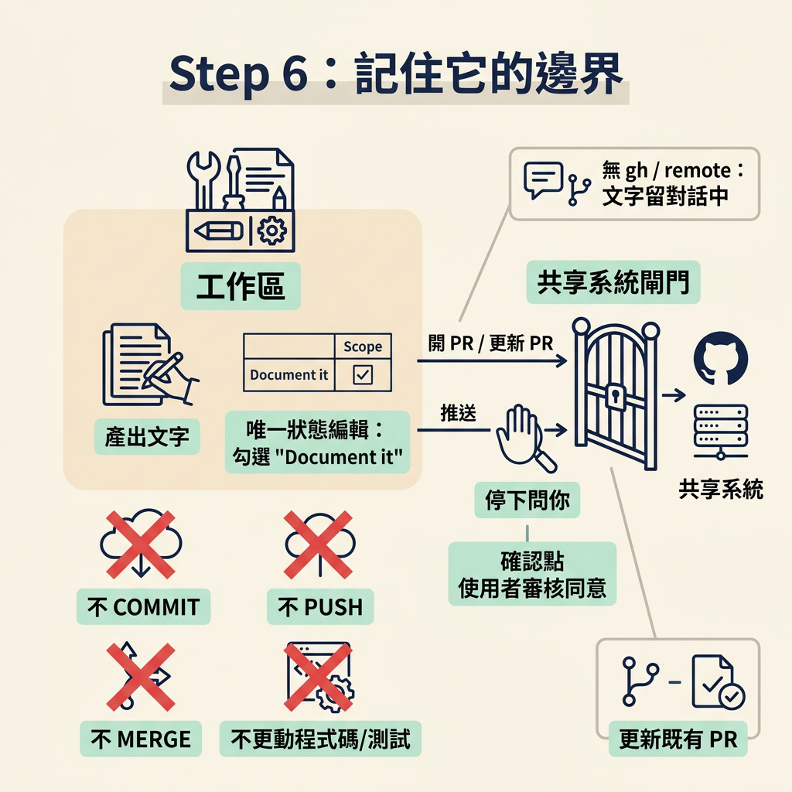

這一節要把 /document 從頭跑一次。你會看到它先選型別、收集歷史、自己讀 diff，再依照對應的模板寫出文件。你會讀懂 PR body 每一段在回答什麼問題、知道四種型別各自的成品放在哪裡，並牢牢記住它的邊界：它只寫散文，不 commit、不 push、不 merge，而要動到對外動作之前一定先問你。
做完這一節，你會拿到一件可以直接用的成品：若是 pr，是一份完整的 PR 標題與內文；若是其他三型，是寫到對應路徑的文件，外加一段兩三行的預覽。
前置條件取決於你選哪一型。pr 與 changelog 需要一條相對 base 有差異的分支；release-note 需要版本範圍（有 tag，或由你指定）；postmortem 則需要你提供事件的基本事實，因為那不在 git 裡。先確認你手上是哪一種材料，再決定跑哪一型。

最直接的跑法是直接在後面接型別：/document pr、/document changelog、/document release-note、/document postmortem。如果不接，它會先從你所在的位置推斷：在 feature branch 上就建議 PR 描述，並請你確認。推斷不出來時才把四個選項列給你選。
"What should I write?"
header: "Doc type"
options:
- label: "PR description" → pr # mark (recommended) if inferred
- label: "Changelog entry" → changelog
- label: "Release notes" → release-note
- label: "Postmortem" → postmortem
你會注意到它把推斷出來的那一項標成「recommended」。這個小設計符合整套 skill 的一貫原則：先替你做出一個判斷，再讓你覆寫，而不是丟一個中性的選單要你自己想。
型別確定後，它不會立刻去讀一大坨檔案，而是先蒐集幾個便宜的訊號：base 分支是 main 還是 master、目前在哪條分支、這個分支相對 base 有哪些 commit 與變更的檔名。如果是 release note，它會另外把 tag 列出來。
# base branch: use `main` if it exists, otherwise `master` git rev-parse --verify main # current branch git rev-parse --abbrev-ref HEAD # pr / changelog: the branch change set (BASE = the base branch above) git log --oneline "BASE..HEAD" git diff --name-only "BASE...HEAD" # release-note: needs tags. List them; if there are none, fall back gracefully (treat as NO_TAGS). git tag --sort=-creatordate
同時它也會去找「為什麼」的材料：列出 docs/specs/ 底下那些以數字開頭的 spec，取最近修改的三份。這一步只拿路徑，不急著讀內容，真正要讀的時候再說。
接著它會自己讀 diff，讓每一句說法都有真實的變更撐著。這裡有一個刻意的分工：文件由主執行緒自己寫，唯一可能外包出去的只是「讀」。而即使是讀，也只在 diff 非常大（例如超過 25 個檔案）時，才交給一個唯讀的 scout 子代理去濃縮，避免把主對話的 context 撐爆。
除了 diff，它還會套用幾份輸入：專案的慣例（讀 AGENTS.md，沒有就退回 CLAUDE.md）、最近 spec 的路徑（用來寫「為什麼」）、這一型的輸出位置，以及今天的日期。
The inputs to apply: 1. Document type + its template (the chosen one only; read it) 2. Source: commit list, diff command, and (postmortem) the incident facts. Read the diff yourself; for a very large diff (e.g. >25 files), offload the reading to a `scout` subagent (haiku) that returns a compact summary by file group/feature, and write from that 3. Project context contents (project name, conventions), read `AGENTS.md`, or `CLAUDE.md` fallback, + recent spec paths for the "why" 4. Output target for the type and today's date 5. **pr**: the gh action, `none (chat-only)` | `gh pr create` | `gh pr edit` (from the `GH_INSTALLED`/`HAS_REMOTE`/`PR_EXISTS` checks) 6. **changelog**: **match the existing `CHANGELOG.md` format** if the file exists (don't impose Keep a Changelog over a different established style) 7. **`release-note`**: the resolved version + range
選 pr 時，成品是一份標題加內文。標題只有一行，用祈使語氣，長度上限 72 個字元，並沿用專案的 commit 慣例（例如 feat:、fix:）。內文則固定照六個段落走：

## What <1 to 3 sentences: what this PR does, in plain terms.> ## Why <The motivation. Link the spec if one governs this change, e.g. "Implements docs/specs/0007-rate-limiting.md". Reference the issue/ticket if known.> ## Changes - <key change, grouped logically, not a raw commit dump> - <key change> ## How to test / verify - <the steps or commands a reviewer runs to confirm it works> - <what they should observe> ## Risk & rollout <Blast radius, migrations, feature flags, or rollback notes. Write "Low risk, no migrations, no flags." when that's true.> ## Notes for reviewers <Anything that helps the review: a tricky decision, a deliberate tradeoff, an area wanting extra eyes. Omit if nothing.>
這六段可以這樣理解：What 用三句話以內的產品語言講這次做了什麼，要讓忙碌的 reviewer 一眼掃過就懂；Why 講動機，若有一份 spec 主導這個變更就把它連上；Changes 把改動依目的分組，而不是照 git log 原封不動貼上；How to test 給出 reviewer 實際可以跑的步驟與預期看到的結果；Risk & rollout 講影響範圍、migration、feature flag 與回滾方式，若 review 有找到風險，就寫在這一欄；Notes for reviewers 則留給那些需要多花一點眼力的地方。
模板另外附了四條寫作規則，其中兩條特別重要：改動要依目的分組，因為 reviewer 要的是故事而不是 commit 清單；測試步驟不能自己發明，要從真實的測試或這個變更實際的行為推導出來。前者避免文件變成流水帳，後者則是整份文件誠實不誠實的底線。
四種型別的落點不同，這也決定了你拿到成品的方式。
- **Target**: OUTPUT_TARGET - `pr` → return the title and body as text (always). Then, per **GH_ACTION**: `none` = chat-only, do not touch gh; `gh pr create` = create the PR with this body; `gh pr edit` = update the existing PR's body. Never run a gh command other than the one in GH_ACTION. - `changelog` → **Edit** `CHANGELOG.md`. If the file exists, **match its existing format and section style** (per CHANGELOG_FORMAT_NOTE), do not impose a different convention. Only if it does not exist, create it with a Keep a Changelog header. Add the entry under the current unreleased/top section. - `release-note` → **Write** `docs/releases/<version>.md` (create the directory if missing). - `postmortem` → **Write** `docs/postmortems/<DATE>-<slug>.md` (create the directory if missing).
兩個細節值得記住。第一，pr 的內文一定以文字形式回傳到對話裡，即使你根本沒安裝 gh 也照樣可用。第二，changelog 會先配合既有的 CHANGELOG.md 格式，只有在檔案不存在時，才用它預設的 Keep a Changelog 標頭建立，而不是硬把自己的格式套上去。
/document 的定位是一個技術寫手，不是一個工程自動化工具。它產出的是文字，不是動作。
This skill does not commit, push, or merge; it produces the prose (and ticks the `Document it` box per the closing gate above, the only scope edit it makes).
換句話說，它唯一會對專案狀態做的編輯，就是在 scope 裡把 Document it 那一格打勾；除此之外，程式碼、測試、spec 都不會動到。
而只要牽涉到對外的動作，它的預設就是先停下來問你。開一個新的 PR 或更新既有的 PR，等於把資訊送到共享系統，所以它會先把完整的內文攤給你看，取得同意後才動作，不管你專案設定怎麼寫。如果這條分支上已經有 PR，它會去更新那一個，而不是建立重複的。沒 gh、沒 remote 時，它就只把文字留在對話裡，不會硬試。

它也有一套自己的輸出語氣規則，讀起來會像一位同事在跟你說話：用平實的語言、把你當「你」稱呼、把每一步都當成建議而非命令。這些規則背後是同一個立場——文件是寫給人讀的，不是寫來炫技的。
課程把時機整理成四種，剛好對應四個型別：
postmortem 這一型會和 /debug 搭配：/debug 負責找出根本原因並留下調查紀錄，/document 再把那份紀錄轉成團隊可以閱讀的事件文件。你會在後面的復原模組正式遇到 /debug。
/document先選型別（或讓你選），再收集 base 分支、commit 清單、變更檔名與 tag 這些便宜的歷史，接著由主執行緒自己讀 diff，只在 diff 極大時才把讀取外包給唯讀的 scout。它照模板寫：PR body 由 What、Why、Changes、How to test、Risk & rollout、Notes for reviewers 六段組成，改動要依目的分組，測試步驟不能發明。成品依型別落點不同：PR 內文以文字回到對話，changelog 併入
CHANGELOG.md，release note 寫到docs/releases/，postmortem 寫到docs/postmortems/。它的邊界很清楚：只寫散文，不 commit、不 push、不 merge，唯一會動的專案狀態是 scope 上的Document it；任何對外動作之前，一定先把內文給你看、問過你才做。
走到這裡，你已經把 GA tier 的兩個動作都走過一遍：先用 check review 拿到一個獨立視角，再用 /document 留下會跟著程式碼走的紀錄。下一步的練習，就是挑一個自己的功能，把這四個 GA 步驟完整跑一次，並實際體會「獨立審查」到底替你省下了什麼。